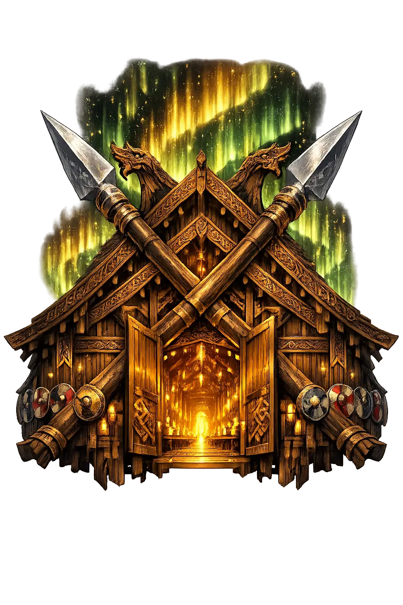

The Authentic Orthography
Hall of the Slain · Mead-hall of the Einherjar

Unicode restoration and ASCII comparison
ᚢᛅᛚᚼᚢᛚ
The name in its original Norse form. Valhǫll (ᚢᛅᛚᚼᚢᛚ) is attested in the source tradition — “Hall of the slain warriors”. Its original diacritics and script distinctions carry the full phonetic and orthographic weight of the source tradition.
valholl
Reduced to plain valholl, the name loses everything that made it specific: original diacritics and script distinctions. What remains is an ASCII string that machines can parse but that no longer speaks with its original voice.
Valhǫll
The Unicode restoration recovers what ASCII flattened. Valhǫll restores original diacritics and script distinctions, returning the name to its original written dignity. The domain encodes to Punycode, but the browser displays the truth.
Valhǫll.com → xn--valhll-zcc.com
The non-ASCII characters in Valhǫll are encoded while the ASCII remains visible. To the DNS, it is Punycode. To humanity, it is Valhǫll.
How Valhǫll travels from ancient script to the modern URL
Old Norse Valhǫll; from valr “slain warriors" + hǫll “hall"; Odin’s hall in Asgard.
Hall of the Slain
The Unicode restoration Valhǫll uses registrable Thorn and vowel accents; the runic form is not used because runic TLD support is impractical.
Owned, ideal, and ASCII forms of Valhǫll
Valhǫll
Restores ᚢᛅᛚᚼᚢᛚ. The live temple domain — valhǫll.com.
valholl
Flattens ᚢᛅᛚᚼᚢᛚ. The plain ASCII fallback — what DNS and legacy systems see.
How Valhǫll was spoken
Valhǫll is the great hall of Óðinn, roofed with shields and crowded with the einherjar — warriors who died in battle and were chosen by the valkyries. It is not a quiet heaven but a warrior's training ground: by day the dead fight to the death, by night they rise whole and feast on the ever-renewing boar Sæhrímnir, while the she-goat Heiðrún pours mead from her udders.
The chosen slain who train for the final battle at Ragnarök.
Its rafters are hung with spears and its roof is thatched with golden shields.
The boar slaughtered and reborn each night to feed the hosts.
The choosers of the slain who serve mead and bear warriors to Óðinn's hall.
Stories of Valhǫll
Valhǫll is less a single myth than a single place at the center of many myths. It is the destination of the valkyries, the home of the einherjar, and the staging ground for Ragnarök. Every battle death is implicitly a journey toward its doors.
In Grímnismál, Óðinn in disguise describes Valhǫll in detail: it has 540 doors, and through each door eight hundred warriors will march abreast at Ragnarök. Its roof is covered with golden shields, its benches are strewn with mail coats, and the hall itself is so vast that it contains enough space for all the chosen dead. The poem makes war into architecture.
Snorri records the daily life of the einherjar: they don their armor, go out into the courtyard, and fight one another with joy. Those who are killed rise again whole and return to the hall to feast. The boar Sæhrímnir is cooked and eaten every evening, and by morning he is whole again. It is an eternal rehearsal for the last war.
In Völuspá, the valkyries ride through the air and over the sea to choose the slain; Grímnismál 14 (followed by Snorri in Gylfaginning) adds the division of the spoil — Freyja takes half the fallen for her field Fólkvangr, and half go to Óðinn. The cry of battle and the summons to Valhǫll are woven into the seeress's prophecy of the world's end. The hall is both reward and recruitment.
Valhǫll is the answer to a haunting question: what becomes of violence after death? The einherjar do not rest; they fight, die, and feast in an endless cycle, preparing for a war they know will consume the gods. It is paradise not as peace but as purpose.
Enter Extended Lore